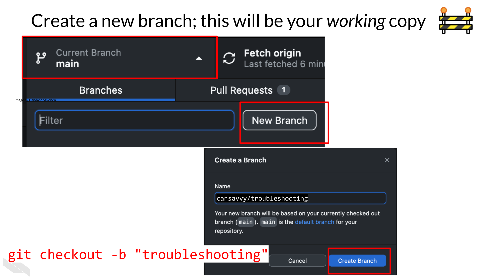
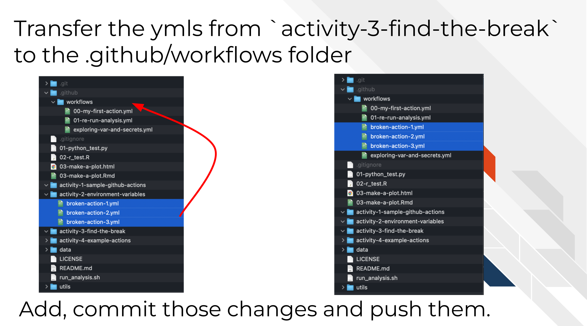
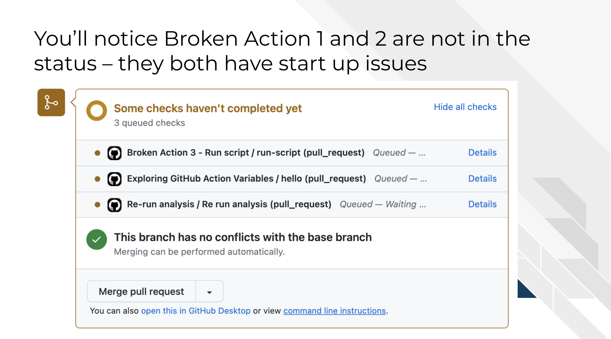
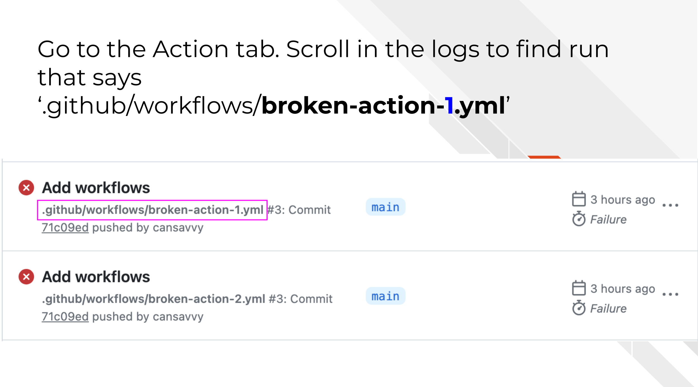
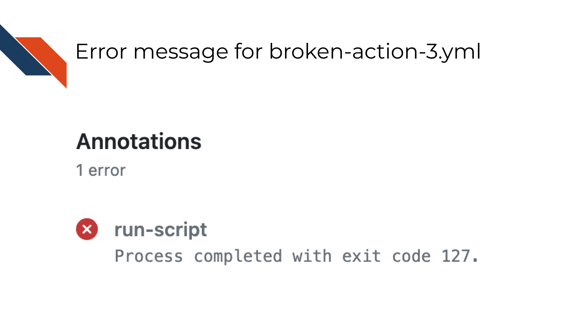
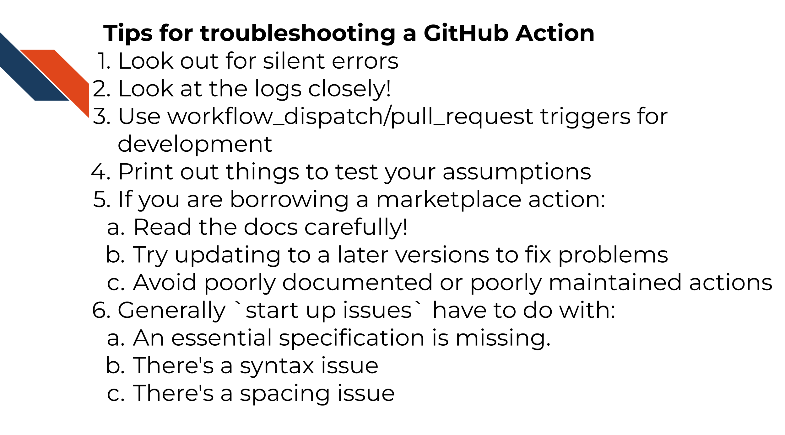

Chapter 7 Troubleshooting GitHub Actions

Many of your standard programming troubleshooting skills are applicable with GitHub actions. In this chapter we’ll five you a few more tips for what might be the most common ways that GitHub Actions can break and what those error messages might look like.
7.1 Tips
7.1.1 Look out for silent errors!
A well designed GitHub Action will:
- Successfully fail when you should be alerted to something that isn’t working
- Successfully pass when the test is working as you’d like.

What makes point 1 tricky is that just because you get a green check mark, doesn’t mean that all your steps ran successfully or did what you thought they were doing.

Especially when you are first developing a GitHub Action, it is a good idea to look through the logs and click on the dropdown arrows for each step to see what was printed out.
It’s a great idea to add a test or evaluation that will be more specific to what you need to be done in your GitHub Actions. This is where the variable setting we discussed in the previous chapter can come in handy.
Sometimes you might be able to do something as simple as this:
- name: Check on re-run outcome
if: steps.running.outcome != 'success'
run: |
echo Re-running status ${{steps.running.outcome}}
exit 1Where running is the id: of the step you want to evaluate. However this will have limited success and evaluations like this should always be made as specific as possible to what your GitHub Action is testing.
In order to design these steps you are going to need to look closely at your logs to see when things are
7.1.2 Look at the logs closely!
Whether you GitHub Action fails or not, go to the logs to see how they ran. You can get there by going to Actions tab and clicking on the workflow you want to check on.
You should start by scrolling down on the Actions page to look at the Annotations. This is GitHub Action’s summary of how the workflow ran. However, the summary is often unlikely to give you enough information to troubleshoot a failed action.
In order to find out what the error message really is, you may need to dig into the logs deeper than that. Usually when you open up the log it will open up the step that it detects has failed.
Read carefully what output happened here versus what you expected to happen. You may want to use the arrow to show what commands were specifically run. Sometimes you may need to look in earlier steps to really pinpoint what has happened.
You may want to Google those messages depending on what they are saying. If the message has to do with a script being called you will want to test those scripts you wrote elsewhere to make sure they are working.
7.1.3 Use workflow_dispatch/pull_request triggers for development
Regardless of whether you want your final GitHub Action to run on a pull_request or workflow_dispatch triggers, it can be helpful during development to use these. You can have multiple triggers for a GitHub actions.
The pull_request trigger is helpful for development so that every time you push to your pull request your action will be re-run automatically so you can see if what you tried worked. This is the default method (in my mind) for developing a GitHub action. The only instance you may not want to use this method is if you are using GitHub default variables that are different in pull requests than they will be in your final version of the GitHub Action. In that instance a pull_request may not be a representative test for you.
The workflow_dispatch trigger is useful so you can re-trigger the workflow run whenever you need to test the next thing you tried for troubleshooting purposes. You might consider doing this if your testing as a pull request isn’t appropriate. You can also initiate workflow_dispatch workflow runs from any branch – so you don’t have to merge it before you’ve polished it.
There’s two caveats to this strategy:
- If you don’t want these triggers long term, make sure you delete them before you merge to main.
- Recall that if you are using default environment variables in your workflow runs that those change depending on the triggers, so those may not always be representative of the workflow run as you it will be run with the final version.
7.1.4 Print out things to test your assumptions
You can check your assumptions about GitHub Actions is running things by printing out pieces of the action. For example, if you are using variables or file paths and suspect they are part of the issue, you can run ls or print out a variable with echo.
run: |
echo ${GITHUB_ACTION_PATH}
lsThis may help you figure out whether a variable or file isn’t in the place you think it is.
7.1.5 Use Marketplace actions
The great part about using GitHub Actions is that you can use other people’s actions from the marketplace so you don’t have to write everything from scratch!
This however, does mean that you are dependent on the developers and maintainers of these GitHub Actions.
There are three tips for troubleshooting a problematic GitHub Action that is borrowed from marketplace:
- Read their docs carefully and make sure you are using it as specified.
- Try bumping up to a later version if it looks like there’s a bug that may have been addressed.
- Try not to use Marketplace actions that don’t show evidence of being maintained or don’t have fully fledged documentation!
7.2 Activity: Troubleshooting GitHub Actions
What to know about these activities:
- None of these broken actions will require more than 1 simple line to fix it. So don’t spend too much time writing lots of code to fix these.
- There are clues in our descriptions here about what you should look out for in fixing these actions. So look out for these clues.
- Use standard troubleshooting tips to figure this out – Googling and iterative work and attempts is encouraged!
- Create a new branch to work from.
 From command line:
`git checkout -b "troubleshoot-practice"`- For this exercise we are going to copy purposely broken GitHub actions we will fix. Move all three files from the
activity-3-find-the-breakfolder to to your.github/workflowsdirectories you made in the previous chapter.
 From command line:
mv activity-3-find-the-break/* .github/workflows/- Now follow the same set of steps we used in the previous chapters to Add, Commit, Push the changes.
 From command line:
From command line:
git add .github/*
git commit -m "troubleshooting exercise"
git push --set-upstream origin troubleshooting- Now create a pull request with the changes you just made. (Refer to the previous chapter if you need reminders on how to do this).
Scroll to the bottom of this pull request. You’ll notice that only one of the three broken actions have a status here. If you don’t see a GitHub Action you expect to be running, you’ll need to go to Actions tab to see what’s happening. We’ll dive into this in this next section.

7.2.1 Broken Action 1 - Upload a file
Let’s dive into the broken action 1 first. Let’s look into the logs. Go to the Actions tab and find the most recent workflow run that indicates its from .github/workflows/broken-action-1.yml.
You’ll notice that this action and the second one don’t show up normally. They both have startup issues. Meaning their problems are so fundamental that GitHub can’t even process them to the point where they can begin to run.

Generally start up issues have to do with:
- An essential specification is missing.
- There’s a syntax issue
- There’s a spacing issue
Click on this issue’s log and scroll down to the bottom where it says “Annotation”.
In this first case we have an error:
a step cannot have both the `uses` and `run` keys
What do you suppose this error means? When thinking about what you believe this error means, take a look at the parts of the yaml file that have uses and run keys.
To recap, uses is a key we use when we are borrowing an action from the marketplace like the following:
- name: Checkout files
uses: actions/checkout@v3And the run key we generally use for calling some bash or other language’s commands. like this:
- name: Print out a thing
run: echo Let's print a thing out!Both run and uses are calling commands. So given this information why do you suppose we are getting the error:
a step cannot have both the `uses` and `run` keys7.2.1.1 Fixing Action 1
- Based on what you think is causing this error, attempt to make a change to the
broken-action-1.ymlfile. - Then add and commit that change and push it to GitHub.
- Return to your logs to see the most recent run of the action from
.github/workflows/broken-action-1.yml. - Look at the logs to see if the error is different or is fixed. If it ran successfully you’ll see it’s actual title show up in the logs. But regardless if it fails or succeeds you should check the logs.
- Repeat these steps until you have fixed action 1.
7.2.2 Broken Action 2 - Create an issue
Let’s look into Action 2’s logs to try to fix it. Go to the Actions tab and find the most recent workflow run that indicates its from .github/workflows/broken-action-2.yml.
This action, like the first one, has start up issues so it will not have its status shown on the pull request.
 Click on this issue’s log and scroll down to the bottom where it says “Annotation”.
Click on this issue’s log and scroll down to the bottom where it says “Annotation”.
In this case we have an error:
You have an error in your yaml syntax on line 11
What do you suppose this error means? What’s nice about this error is that it does tell us a specific line to look at. Keep in mind though sometimes when GitHub action tells us a line this may be approximate. We may need to look slightly before or slightly after the line it calls for us to know what to fix.
7.2.2.1 Fixing Action 2
- Open up the
broken-action-2.ymlfile. - Take a look at the code around line 11
- What do you notice that is different about these lines as compared to other actions we’ve looked at?
- Formulate a hypothesis on what you think is the problem and change that in
broken-action-2.yml. - Then add and commit that change and push it to GitHub.
- Return to your logs to see the most recent run of the action from
.github/workflows/broken-action-2.yml. If it ran successfully you’ll see it’s actual title show up in the logs. But regardless if it fails or succeeds you should check the logs. - Look at the logs to see if the error is different or is fixed.
- Repeat these steps until you have fixed action 2!
7.2.3 Broken Action 3 - Run script
Finally, let’s look into Broken Action 3 - Run script. Go to the logs and look for a recent workflow run of that title.

In this case, the Annotations might tell us Process completed with exit code 127. If we look online we can see that this means that either a script doesn’t exist or it can’t run.

This is moderately helpful but doesn’t really help us identify the problem. So we have to dig into the log some more. When we click on the log it will likely open up the step that this workflow failed on.

In this case we have an error:
/__w/_temp/36dfc03e-56ed-43fa-9019-85d8b151f42a.sh: 2: python3: not found
Running python hereThe /__w/_temp/36dfc03e-56ed-43fa-9019-85d8b151f42a.sh bit just tells us information about where this was being ran in the temporary workspace that GitHub was using to run our workflow. And if we look at our yaml file we can see the message: Running python here is just something we had echoed.
What we’re going to want to zero in on here is the python3: not found.
7.2.3.1 Fixing Action 3
- Open up the
broken-action-3.ymlfile. - It looks like Python is not able to be found. Look at the yaml file and try to figure out why that might be.
- Formulate a hypothesis on what you think is the problem and change that in
broken-action-3.yml. - Then add and commit that change and push it to GitHub.
- Return to your logs to see the most recent run of the action from
.github/workflows/broken-action-3.yml. - Look at the logs to see if the error is different or is fixed.
- Repeat these steps until you have fixed action 2!
For a further hint about fixing this problem look here
You’re going to want to look into what software packages the docker image referenced on in the image: key has. Does rocker/r-base image have Python?
If not, you may need to look for a Docker image to use that has python. We’ve used one in a previous example that you could borrow.
7.3 Summary
In this activity, we practiced troubleshooting GitHub Actions. We discussed some of the most common ways that GitHub Actions can be broken. Here’s a summary of troubleshooting tips covered in this chapter/
